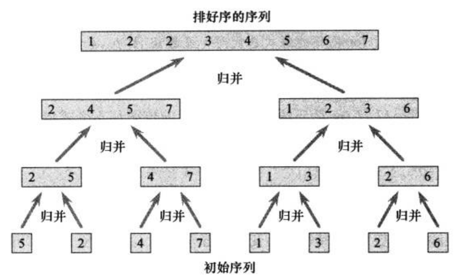

进入正题前，分享下最近看剧学到的一句不错的格言：
The unhappiest man is one trapped in past memory or future hope,incapable of living in the present.
算法思想
归并排序是分治法的一个经典应用：将原问题分解成规模较小的子问题，递归求解这些子问题，然后合并这些子问题来建立原问题的解。
直接上图吧。

在对上面这个数组的排序过程中，先将数组拆到长度最小的有序数组(即只包含一个元素)，然后层层归并，每层待合并的有序序列的长度不断增加，直到最后把长度为原数组一半的两个有序序列合并成最终的结果。
还有个关键问题是如何将两个有序序列合并成一个大的有序序列呢？可以使用双指针法，分别指向两个有序序列的开头。下面的 merge 方法直接给出了实现。
算法实现
1
2
3
4
5
6
7
8
9
10
11
12
13
14
15
16
17
18
19
20
21
22
23
24
25
26
27
28
29
30
31
32
33
| fun mergeSort(nums: IntArray): IntArray {
if (nums.size < 2) return nums
val mid = nums.size / 2
val leftArr = nums.copyOfRange(0, mid)
val rightArr = nums.copyOfRange(mid, nums.lastIndex + 1)
return merge(mergeSort(leftArr), mergeSort(rightArr))
}
fun merge(nums1: IntArray, nums2: IntArray): IntArray {
val ans = IntArray(nums1.size + nums2.size)
var i = 0
var j = 0
while (i <= nums1.lastIndex && j <= nums2.lastIndex) {
if (nums1[i] <= nums2[j]) {
ans[i + j] = nums1[i]
i++
} else {
ans[i + j] = nums2[j]
j++
}
}
while (i <= nums1.lastIndex) {
ans[i + j] = nums1[i]
i++
}
while (j <= nums2.lastIndex) {
ans[i + j] = nums2[j]
j++
}
return ans
}
|